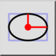

Έλλειψη με ακτίνες
Γραμμή εργαλείων / Εικονίδιο:


Μενού: Σχεδίαση > Έλλειψη > Έλλειψη με ακτίνες
Συντόμευση: E, I
Εντολές: ellipseradii | ei
Γραμμή εργαλείων / Εικονίδιο:


Σχεδιάζει ελλείψεις με δοθείσα μεγάλη και μικρή ακτίνα.